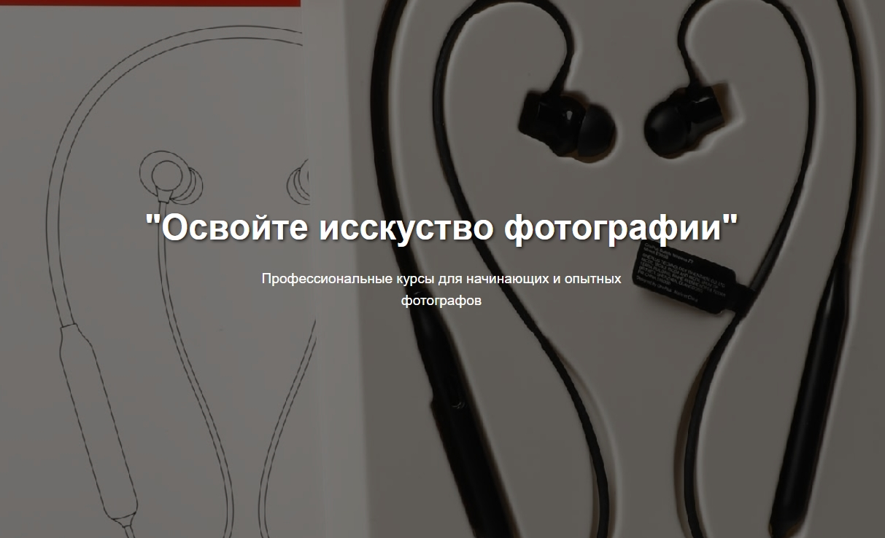
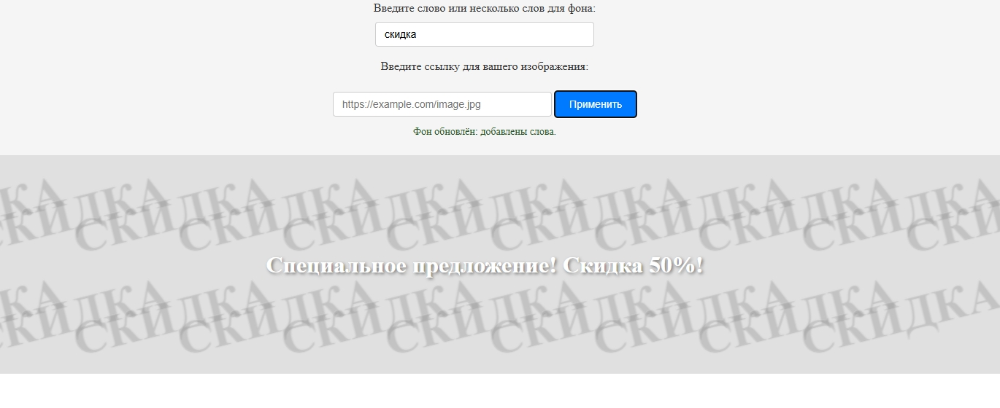
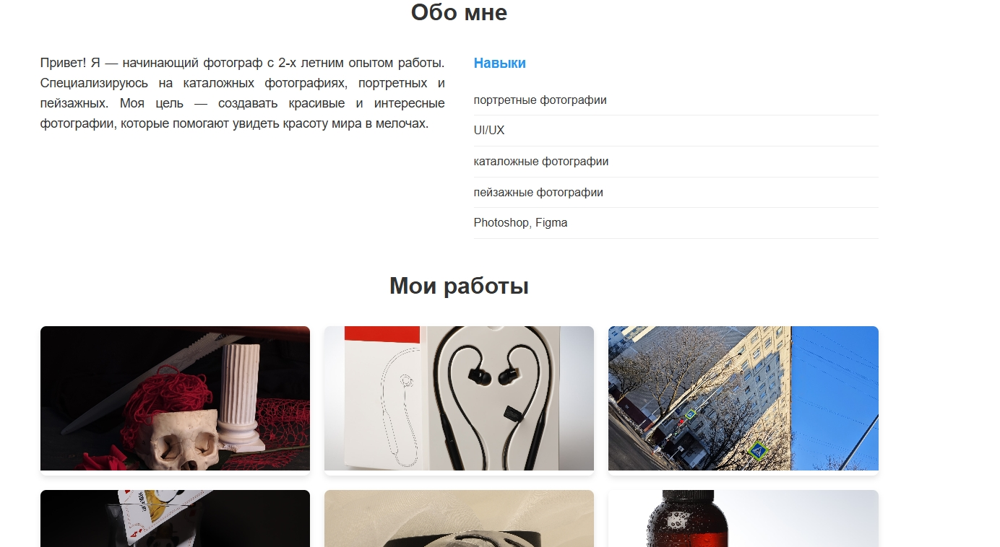
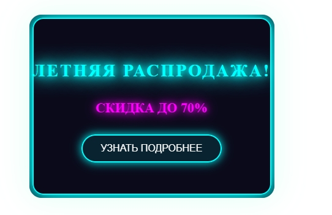
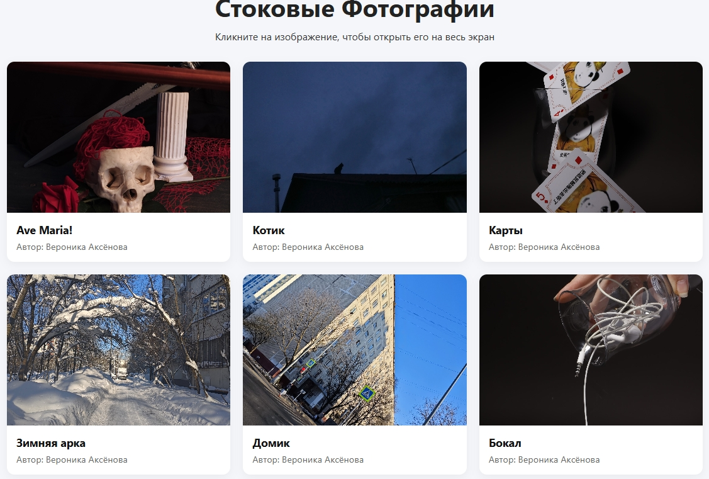
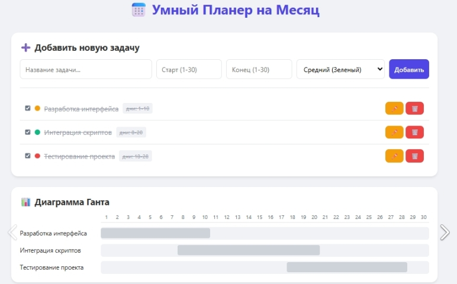

Задание 1: Рекламное объявление в WEB
Основной целью данного задания было ознакомиться с процессом создания визуальной части рекламного сайта. Для этого необходимо было работать с файлами HTML и CSS. Чтобы обеспечить комфортную работу с ними был использован Visual Studio Code. Также был использован сайт W3Schools для получения информации о HTML и CSS. Достигнув нужного результата, работа была загружена на GitHub

Задание 2: Создание интерактивного обьявления
Целью следующего задания стало добавление интерактивных элементов на страницу сайта. Было необходимо добавить возможность загрузки своих фото и ввода текст для фона обьявления. Для реализации этих функций был использован Java Script. Проверив работоспособность сайта он также был загружен на GitHub

Задание 3: Создание портфолио
В этой части работы необходимо по шаблону создать сайт с личным портфолио и своими фото. Важной частью является правильное разделение работы на файлы и вставка изображений. Соблюдая все эти нормы, результаты сохранены в репозитори гитхаб

Задание 4: Анимация в CSS
Данное задание рассчитано на более глубокое изучение такой важной части любого сайта как - набор стилей CSS. А именно необходимо было продемонстирировать как с помощью CSS можно добавить в обьявление анимации. После создания трех различных вариантов все они были также загрцжены на GitHub

Задание 5: Фотостоковый каталог
Задание номер 5 сфокусировано на работе с фотографиями. Для создания рабочего фотостока было необходимо найти подходящие фотографии и реализовать функцию их открытия на полный экран. Когда все необходимые возможности были реализованы сайт был загружен в репозиторий GitHub

Задание 6: Умный планировщик
Следующее задание требует от нас рассмотреть код умного планировщика. Данный код представляет собой несколько связанных функций, которые в совокупности дают пользователю очень полезный и информативный интерфейс. Протестировав его и подготовив файлы, сайт был опубликован в публичнос репозиторие .

Задание 7: Отчет по практике
Последнее задание подводит все итоги и закрепляет изученное. В этот раз необходимо создать сайт-отчет, в котором будут использованы все знания, полученные во время практики такие как работа с фото и правильное разделение файлов